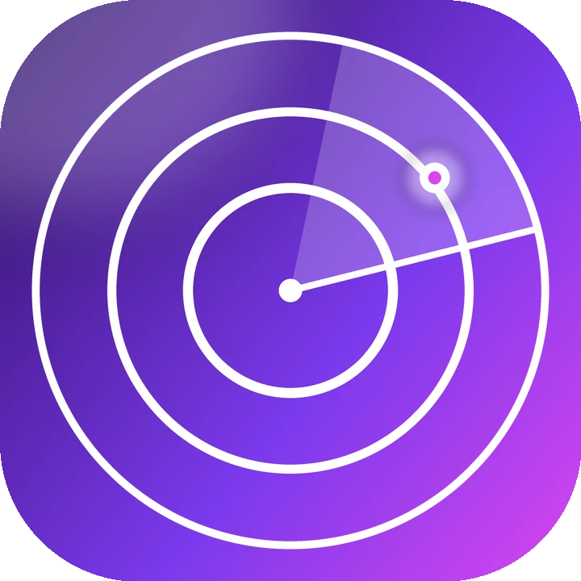

Android
ثبّت v2rayNG أو Hiddify، ثم اضغط زره في مركز الاشتراك أعلاه. أو انسخ رابط Base64 وأضفه كاشتراك ثم حدّثه.
اشتراك مفتوح المصدر لبروتوكولات VLESS · Reality · VMess · Trojan · Shadowsocks · Hysteria2. كل إعداد تم التحقق منه حمل طلب HTTP حقيقيًا في ثلاث جولات مستقلة قبل نشره.
تم الاختبار من موقع خادم الاختبار — وليس ضمانًا لمزود الإنترنت لديك.

اختر قائمة، واختر الصيغة التي يقرأها تطبيقك، ثم انسخ أو امسح أو استورد بلمسة واحدة.
—
—
كل زر يفتح التطبيق المثبت على جهازك ويمرر له صيغة الملف المناسبة.
كل إعداد تم التحقق منه بلمحة واحدة — صفِّ، انسخ واحدًا، أو اعرضه كرمز QR.
جرّب بحثًا أو عامل تصفية مختلفًا.
إعدادات تم التحقق منها مجمعة حسب دولة الخادم (GeoIP). كل بطاقة اشتراك مستقل.
دائرة لكل دولة، يكبر حجمها بعدد الإعدادات المؤكدة الموجودة فيها الآن.
الإعدادات المؤكدة في كل تشغيل، كما سجلها الروبوت تمامًا.
كل رقم أدناه يُقرأ مباشرة من المستودع. لا شيء في هذه الصفحة مكتوب يدويًا.
تُجلب المصادر العامة وتُوحَّد في صيغة واحدة.
الخادم نفسه والإعدادات نفسها ← يُحتفظ بها مرة واحدة.
اتصال TCP بكل نقطة نهاية فريدة.
طلب HTTP حقيقي عبر كل إعداد، في 3 جولات.
يتم التحقق من ملفات Clash وsing-box بالملفات التنفيذية الحقيقية.
ثبّت v2rayNG أو Hiddify، ثم اضغط زره في مركز الاشتراك أعلاه. أو انسخ رابط Base64 وأضفه كاشتراك ثم حدّثه.
في Streisand أو Shadowrocket أو V2Box أو Hiddify، أضف اشتراكًا والصق رابط Base64 — أو امسح رمز QR من شاشة أخرى.
يقرأ v2rayN وHiddify رابط Base64. تستخدم Clash Verge / mihomo ملف clash.yaml، وتستخدم عملاء sing-box ملف singbox.json.
حدّث الاشتراك (تتغير القائمة كل 15 دقيقة)، جرّب قائمة «السريعة» أو «الآمنة»، أو بدّل إلى مرآة jsDelivr إذا كان GitHub محجوبًا.
مجموعة مفتوحة المصدر من إعدادات V2Ray / Xray (VLESS وReality وVMess وTrojan وShadowsocks وHysteria2) يصونها 0xRadikal تحت علامة رادار. تُعاد إعادة بنائها كل 15 دقيقة تقريبًا على GitHub Actions وتنشر اشتراكات نصية وBase64 وClash وsing-box.
ابدأ بـ«تم التحقق». «السريعة» هي الإعدادات المتحقق منها التي كان وسيط تأخيرها دون العتبة، و«الآمنة» تحتفظ فقط بالإعدادات المتحقق منها مع تفعيل السرية الأمامية والتحقق من الشهادات. مجموعات All / Heavy / Light أكبر بكثير لكن معظمها غير مختبر.
يُتصل بكل إعداد ثم يُستخدم لإجراء طلب HTTP حقيقي إلى cp.cloudflare.com/generate_204. لا تصل إلى قائمة التحقق إلا الإعدادات التي تنجح في الجولات المستقلة الثلاث كلها للبناء. اتصال TCP وحده لا يكفي.
Base64 هي الاشتراك الكلاسيكي والخيار الافتراضي الأكثر أمانًا (v2rayNG وv2rayN وHiddify وStreisand وShadowrocket). النص العادي هو القائمة نفسها دون ترميز. clash.yaml هو ملف تعريف كامل لـ mihomo / Clash Meta، وsingbox.json هو إعداد sing-box كامل.
ليس بالضرورة. تُجرى الاختبارات من موقع خادم الاختبار المعروض في هذه الصفحة. تختلف التصفية حسب الدولة ومزود الإنترنت، لذا الإعداد المتحقق منه يثبت أنه يعمل من هناك، لا من كل مكان.
يمكن لمشغل الخادم رؤية عنوان IP الخاص بك وبيانات الاتصال الوصفية، وأي حركة مرور غير مشفرة من الطرف إلى الطرف. استخدم HTTPS، وفضّل قائمة «الآمنة»، ولا تستخدم هذه الإعدادات أبدًا للحسابات الحساسة. لا يصدّق هذا المشروع على أي مشغل.